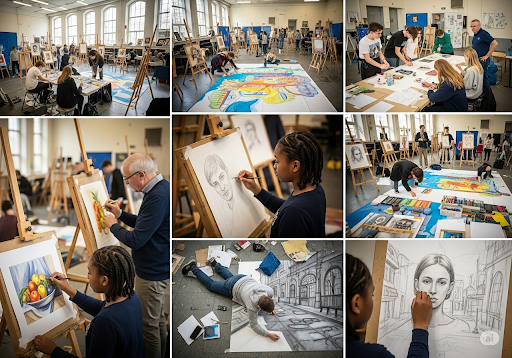
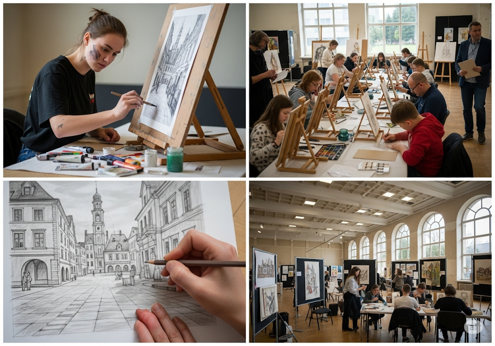

ผลงานการแข่งขันวาดรูป
"เส้นสายและสีสันแต่ละเส้นบนผืนผ้าใบ ล้วนแล้วแต่ซ่อนเร้นเรื่องราวที่แตกต่างกันออกไป การแข่งขันวาดรูปครั้งนี้จึงเป็นเหมือนเวทีที่เปิดโอกาสให้ศิลปินหน้าใหม่ได้ถ่ายทอดเรื่องราวและมุมมองเฉพาะตัวของตนเอง เพื่อสร้างสรรค์ผลงานที่สะท้อนถึงความรู้สึกและจินตนาการได้อย่างไร้ขีดจำกัด"


